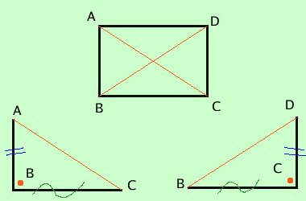
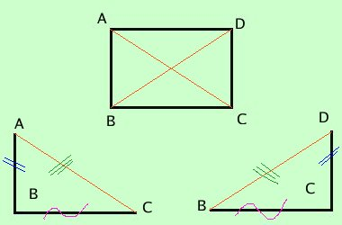

Teorema
in ogni rettangolo le diagonali sono congruenti
e viceversa
se in un parallelogramma le diagonali sono congruenti allora il parallelogramma e' un rettangolo
Dimostriamo prima il teorema diretto e poi il teorema inverso
teorema diretto
in ogni rettangolo le diagonali sono congruenti
ipotesi
ABCD
rettangolo |
tesi
AC = BD
|
Nell'ipotesi e' compreso il fatto che sia un parallelogramma (con tutte le sue proprieta') ed abbia i quattro angoli congruenti; non scrivo tutto perche' mi ci vuole mezza pagina

Dimostrazione
considero i triangoli ABC e BCD; (per renderteli piu' chiari nella figura li ho estratti)
essi hanno:
- ABC^= BCD^per ipotesi
- AB = CD perche' lati opposti di un parallelogramma
- il lato BC in comune
Quindi i due triangoli sono congruenti per il primo criterio di congruenza dei triangoli (due lati ed un angolo) e quindi hanno congruenti tutti gli elementi, in particolare
AC = BD come volevamo
teorema inverso
se in un parallelogramma le diagonali sono congruenti allora il parallelogramma e' un rettangolo
ipotesi
ABCD
parallelogramma
AC = BD |
tesi
ABC^= BCD^
|
nella tesi ho messo solo la congruernza fra due angoli successivi perche' nei parallelogrammi gli angoli opposti sono congruenti

Dimostrazione
considero i triangoli ABC e BCD; (per renderteli piu' chiari nella figura li ho estratti)
essi hanno:
- AC = BD per ipotesi
- AB = CD perche' lati opposti di un parallelogramma
- il lato BC in comune
Quindi i due triangoli sono congruenti per il terzo criterio di congruenza dei triangoli (tre lati) e quindi hanno congruenti tutti gli elementi, in particolare
ABC^= BCD^
AC = BD come volevamo
|